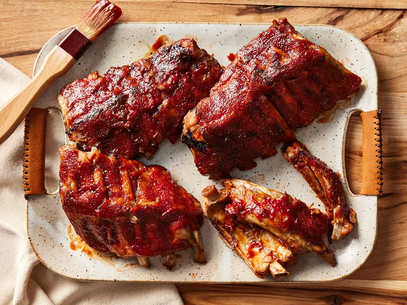

Baby Back Ribs

Description
These slow cooker ribs are the best - and turn out perfect every time!
Ingredients
- 3 pounds baby back ribs, trimmed
- salt and ground black pepper, to taste
- 1/2 cup water
- 1/2 onion, sliced
<1i>clove garlic, minced
- 1 (18 ounce) bottle barbeque sauce
Steps
- Gathe all ingredients
- Season ribs with salt and pepper
- Pour 1/2 cup of water into the slow cooker, then add ribs. Scatter onion and garlic over top.
Cover and cook on low for 8 hours or high for 4 hours
- When the ribs are almost finished, preheat the oven to 375 degrees F (190 degrees C)
- Transfer ribs from the slow cooker to a baking sheet; discard onion and garlic. Coat with barbeque sauce
- Bake ribs in the preheated oven until sauce caramelizes and sticks to meat, 10 to 15 minutes
- Enjoy!
Home